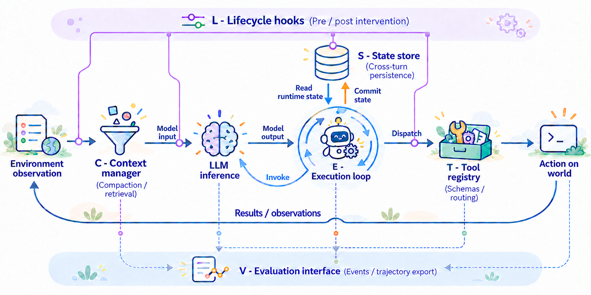
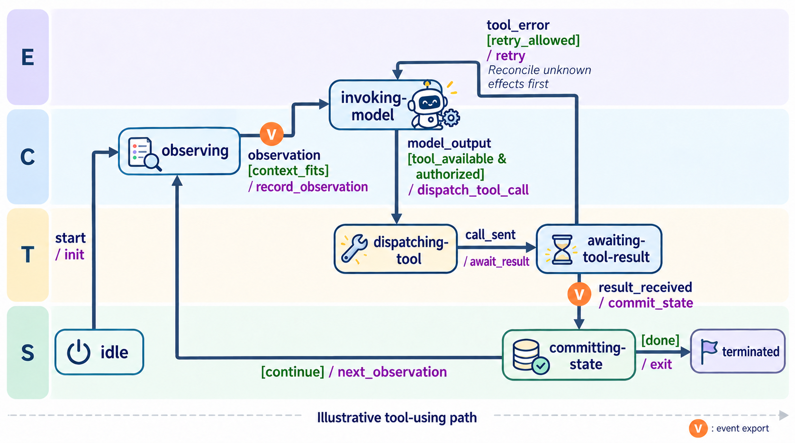
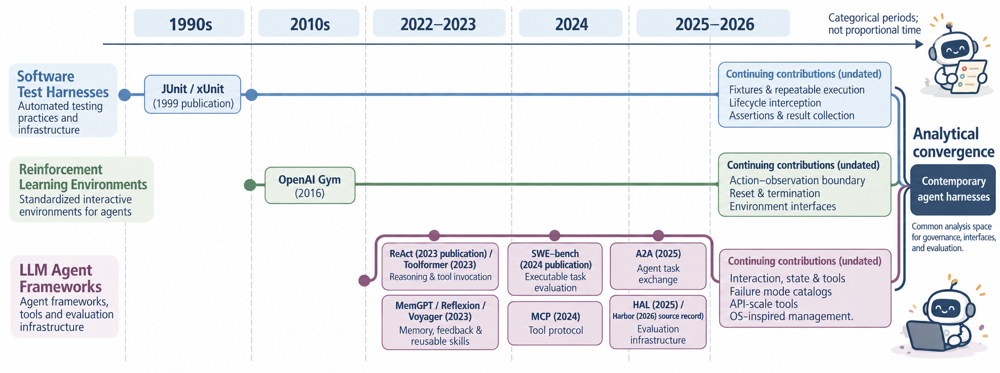
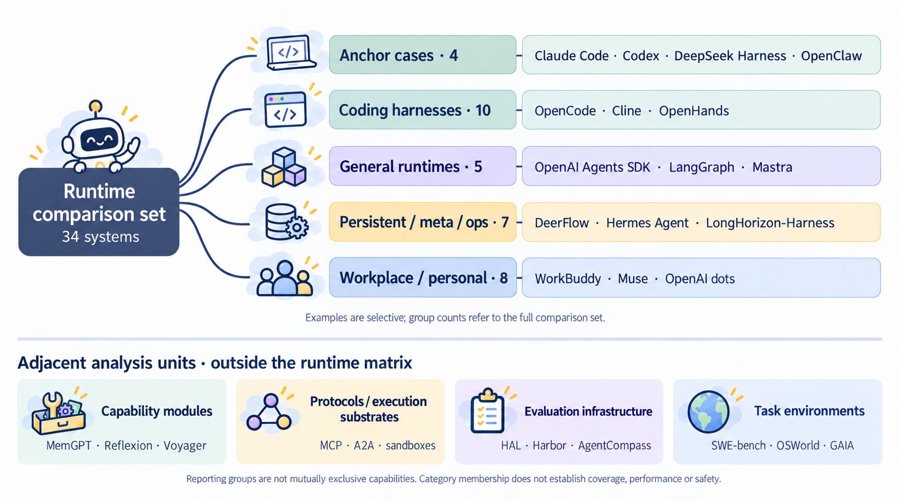
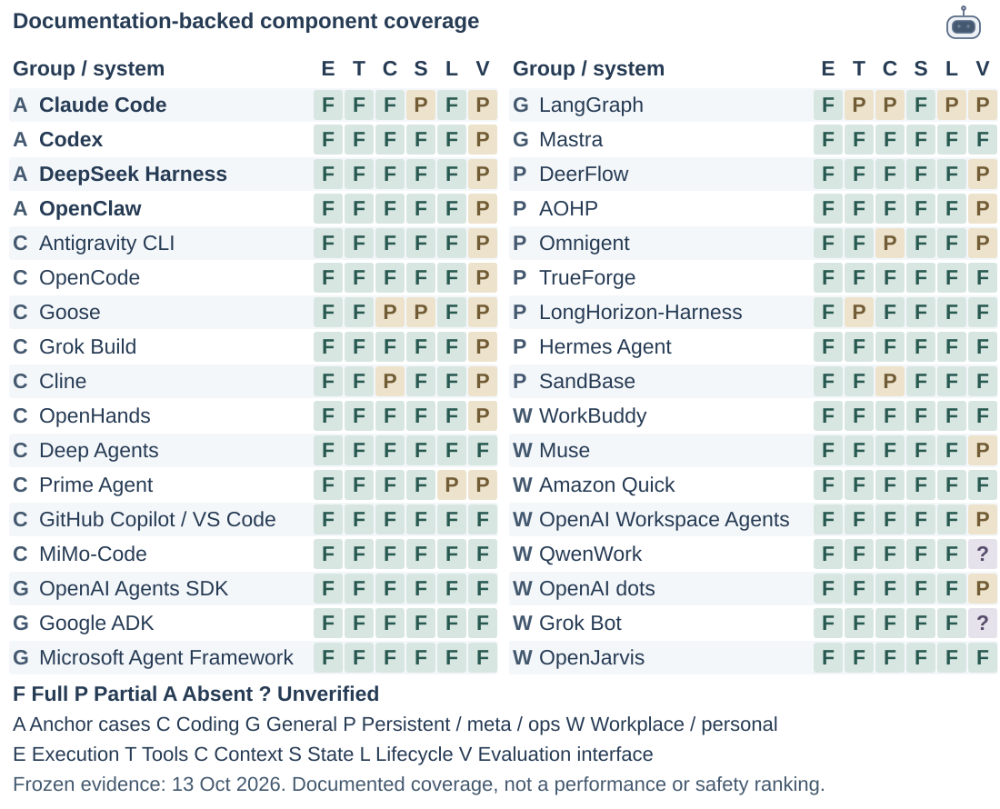
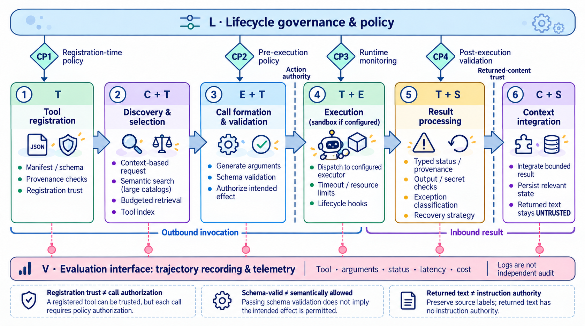
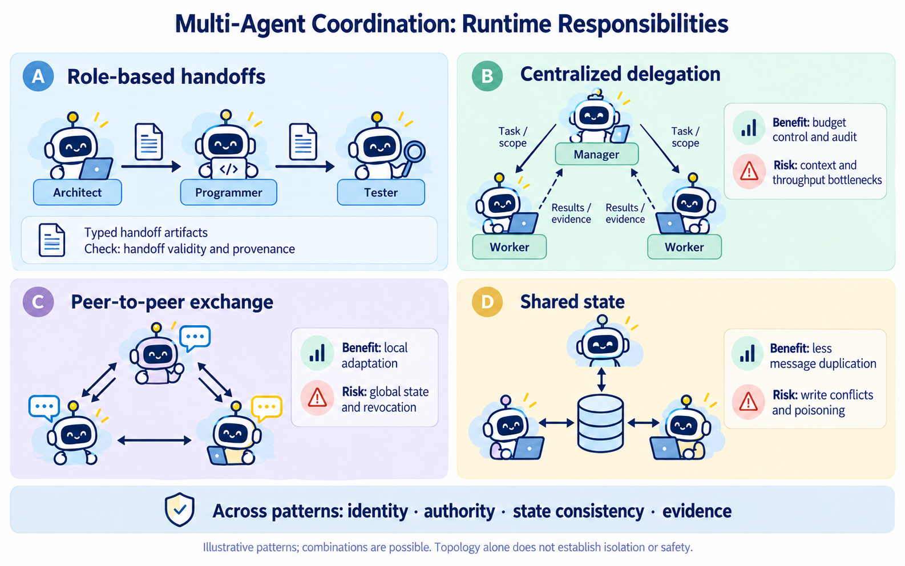
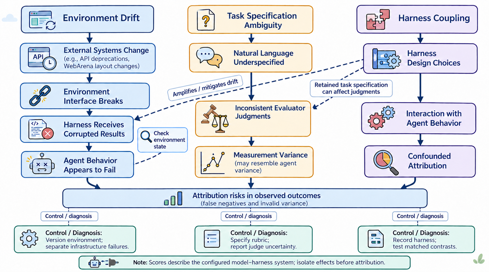
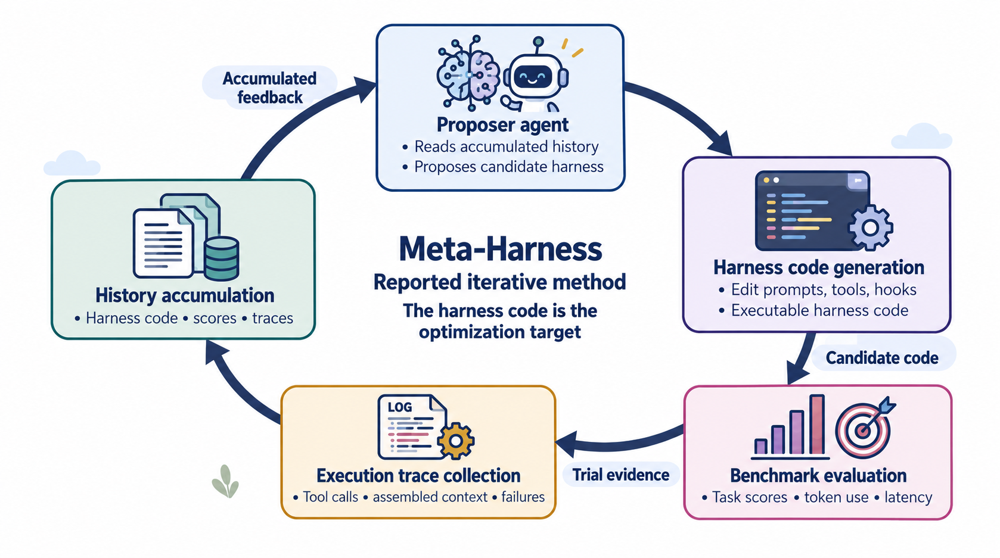

A survey of agent runtimes · 2026
Agent Harness for Large Language Model Agents: A Survey
Minzu University of China · Dalian University of Technology · Xiaohongshu Inc. · University of Science and Technology of China
Agent capability should be analyzed at the model–harness–environment configuration level. The harness is a consequential and frequently under-reported co-determinant of observed behavior.

The paper
A runtime layer made visible
Agent scores usually combine a model with its tools, context policy, state, permissions, environment, and evaluator. This survey makes that surrounding runtime a first-class object of analysis.
Explore the living evidence indexAnalytical framework
Six functions. One runtime.
ETCSLV is a functional vocabulary for recurring governance responsibilities. It describes coverage and responsibility boundaries, not a maturity score.

Historical evolution
Where runtime responsibilities come from

System landscape
Evidence-coded system comparison
Thirty-four systems assessed against the same six functions. The matrix cutoff is 2026-10-12; per-source access dates are shown in the evidence details. Ratings do not measure quality, adoption, or production maturity.


| System | Group | E | T | C | S | L | V | Evidence |
|---|
The comparison set is evidence-driven, not a ranking. Expand a row to inspect first-party sources, version identifiers, confidence, and access date for each component.
Cross-cutting engineering
Tools and collaboration carry runtime obligations
Tool governance across the execution loop

Coordination patterns and responsibility boundaries

Evaluation landscape
Six areas of harness evaluation
The categories include benchmark suites, evaluation methods, and infrastructure. They ask different questions and should not be read as six equivalent benchmark types.

Task environments such as OSWorld, WebArena, GAIA, and SWE-bench remain essential. They measure configured-system task performance; a harness-effect study adds controls that isolate runtime changes.
Literature update
Latest research
A targeted literature check on 18 October 2026 adds seven works across benchmarks, methods, implementation testing, and security. This supplement is not a complete benchmark census. The 34-system matrix remains a 12 October snapshot.
Harness evolution
A concrete optimization case: Meta-Harness

Research agenda
From component coverage to testable effects
The next step is controlled evidence about interactions, persistence, authority, and change—not a larger feature checklist.
Citation
Cite the archived preprint
The repository PDF is v4. DOI 10.20944/preprints202604.0428.v3 resolves to the archived v3 preprint. Paper v5 is under revision and is not linked here.
Open DOI record@article{meng2026agentharness,
title = {Agent Harness for Large Language Model Agents: A Survey},
author = {Meng, Qianyu and Wang, Yanan and Chen, Liyi and Wu, Wei and
Li, Yihang and Jiang, Wenyuan and Wang, Qimeng and
Lu, Chengqiang and Gao, Yan and Wu, Yi and Hu, Yao},
year = {2026},
doi = {10.20944/preprints202604.0428.v3},
url = {https://www.preprints.org/manuscript/202604.0428/v3},
publisher = {Preprints}
}